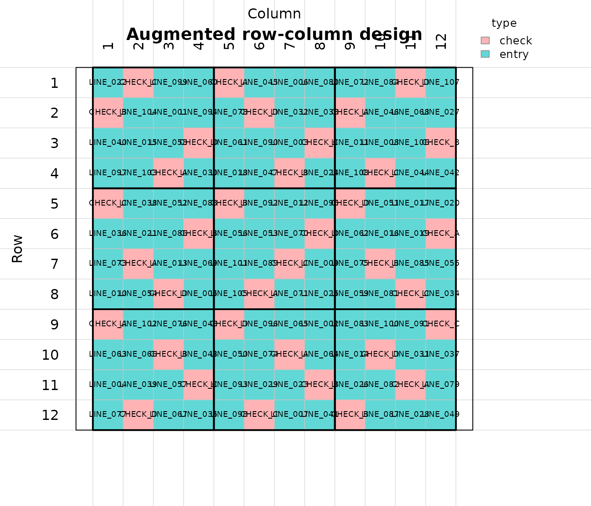
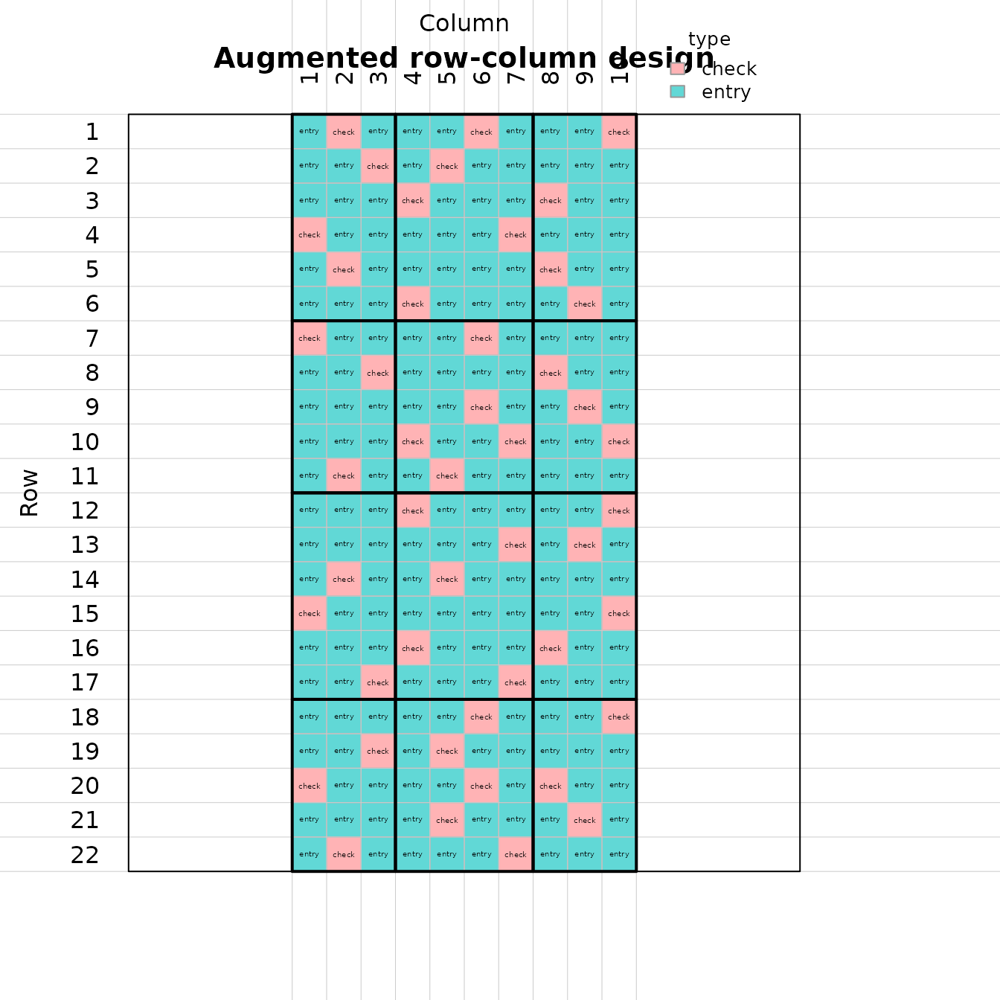
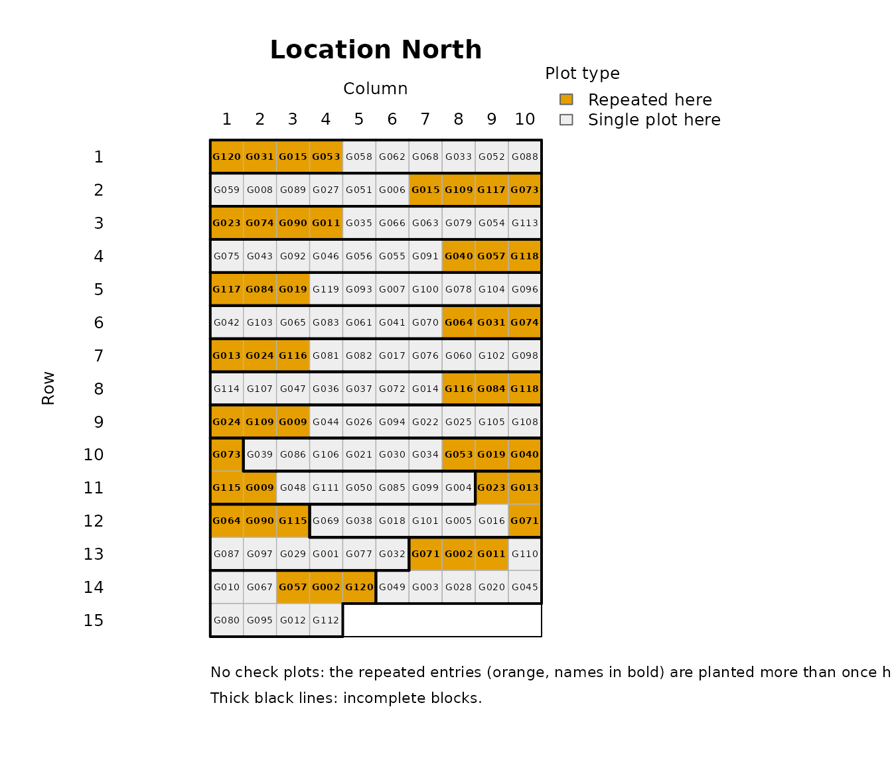
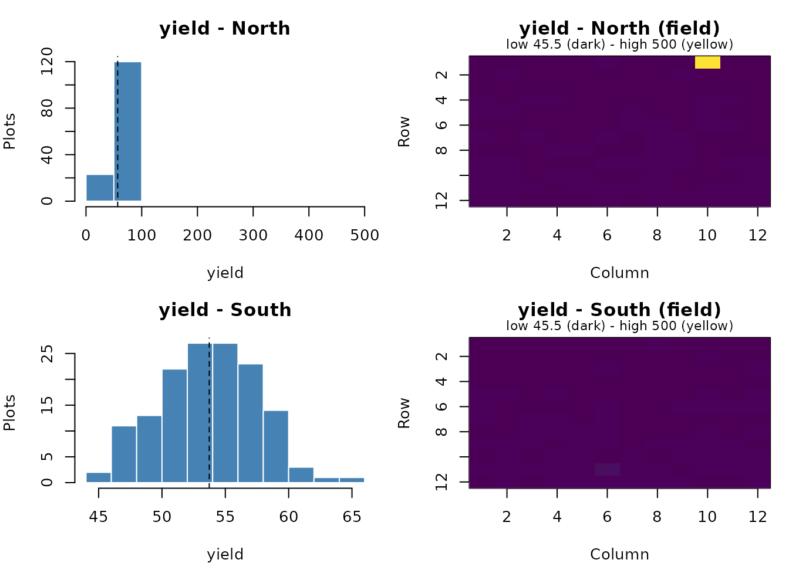
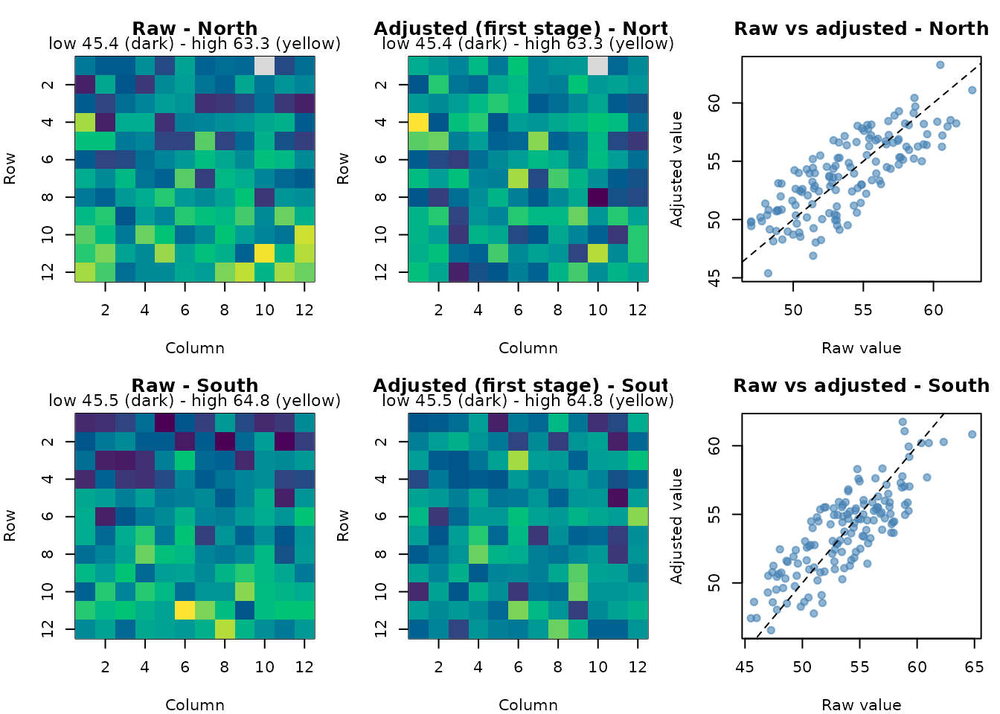
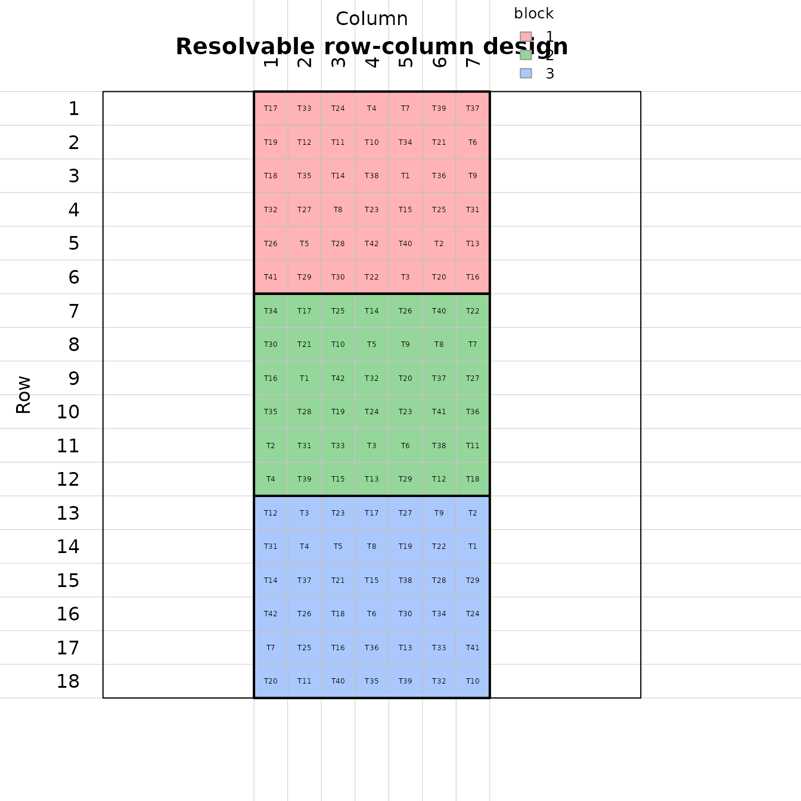

Designing and analysing breeding trials with breedtools
Source:vignettes/breedtools.Rmd
breedtools.Rmdbreedtools designs and analyses plant breeding trials,
from early generations with a single plot per entry to fully replicated
trials, saves the designs directly into a ‘Breedbase’ database, and
helps decide which environments can be analysed together. This tutorial
goes through every design and analysis in the package, using simulated
phenotypes.
Which design?
| Situation | Design | Generate | Analyse |
|---|---|---|---|
| Seed for one plot per entry, one location | Augmented row-column design with replicated checks | augmented_row_column_design() |
analyze_augmented_row_column_design() |
| Seed for one plot per entry per location, several locations | Augmented p-rep design (part of the entries repeated at each location, no checks needed) | augmented_prep_design() |
analyze_augmented_prep_design(),
analyze_augmented_prep_two_stage()
|
| Seed for every entry in every replicate | Resolvable (spatial) row-column design | resolvable_row_column_design() |
analyze_resolvable_row_column() |
| Phenotypes from several trials in ‘Breedbase’ | Variance check and environment grouping |
run_breedbase_variance_check(),
run_environment_stratification()
|
|
| A design ready to plant | Save it as a trial in a ‘Breedbase’ program and folder | save_breedbase() |
Every design function returns a list with summary, the
plot-level design (the field book) and
breedbase_design (the columns for a ‘Breedbase’ upload),
and accepts seed for a reproducible randomization and
output_file for a tab-delimited copy. Every analysis
returns adjusted entry means (adjusted_means) ranked best
first, with standard errors, the mean standard error of a difference
(mean_sed) and the 5% least significant difference
(lsd_5pct).
Start with the information you know
Use design_options() when you know how many entries you
have but have not settled on the field dimensions, number of checks or
replication. It proposes layouts for augmented row-column, p-rep and
fully replicated resolvable row-column designs:
options <- design_options(n_entries = 100, n_locations = 3)
options[, c("option", "design", "n_checks", "rows_in_field", "cols_in_field", "n_reps",
"plots_per_location", "error_df")]
#> # A tibble: 18 × 8
#> option design n_checks rows_in_field cols_in_field n_reps plots_per_location
#> <int> <chr> <int> <int> <int> <int> <dbl>
#> 1 1 augmen… 2 9 14 1 126
#> 2 2 augmen… 3 9 14 1 126
#> 3 3 augmen… 4 14 9 1 126
#> 4 4 augmen… 5 8 16 1 128
#> 5 5 augmen… 6 10 13 1 130
#> 6 6 augmen… 2 14 9 1 126
#> 7 7 prep 0 13 9 NA 115
#> 8 8 prep 0 10 12 NA 120
#> 9 9 prep 0 9 14 NA 125
#> 10 10 prep 0 7 19 NA 133
#> 11 11 prep 0 13 9 NA 115
#> 12 12 prep 0 12 10 NA 120
#> 13 13 resolv… 0 20 10 2 200
#> 14 14 resolv… 0 20 15 3 300
#> 15 15 resolv… 0 10 20 2 200
#> 16 16 resolv… 0 15 20 3 300
#> 17 17 resolv… 0 10 20 2 200
#> 18 18 resolv… 0 12 25 3 300
#> # ℹ 1 more variable: error_df <dbl>n_entries counts test entries, excluding checks. To
consider only certain designs, use
design = c("augmented_row_column", "resolvable"), for
example. Supply known constraints and leave the others unspecified:
fixed_options <- design_options(108, design = "augmented_row_column", n_checks = 4,
rows_in_field = 12, cols_in_field = 12, n_candidates = 200)
fixed_options[, c("option", "rows_in_field", "cols_in_field", "rows_per_block",
"cols_per_block", "n_candidates", "check_plots", "error_df", "method")]
#> # A tibble: 6 × 9
#> option rows_in_field cols_in_field rows_per_block cols_per_block n_candidates
#> <int> <int> <int> <int> <int> <int>
#> 1 1 12 12 4 4 200
#> 2 2 12 12 NA NA 200
#> 3 3 12 12 NA NA 200
#> 4 4 12 12 6 4 200
#> 5 5 12 12 4 6 200
#> 6 6 12 12 6 6 200
#> # ℹ 3 more variables: check_plots <dbl>, error_df <dbl>, method <chr>
design_options(42, design = "resolvable", cols_in_field = 7, n_reps = 3)
#> # A tibble: 4 × 30
#> option design n_entries n_checks rows_in_field cols_in_field
#> <int> <chr> <int> <int> <int> <int>
#> 1 1 resolvable 42 0 18 7
#> 2 2 resolvable 42 0 21 7
#> 3 3 resolvable 42 0 24 7
#> 4 4 resolvable 42 0 27 7
#> # ℹ 24 more variables: square_check_blocks <lgl>, n_locations <int>,
#> # n_reps <int>, rows_per_block <int>, rows_per_rowgroup <list>,
#> # cols_per_colgroup <list>, cols_per_block <int>, rows_per_rep <dbl>,
#> # cols_per_rep <int>, block_size <int>, n_candidates <int>,
#> # checks_per_block <list>, plots_per_location <dbl>, total_plots <dbl>,
#> # field_plots <dbl>, unused_plots <dbl>, check_plots <int>, n_repeated <dbl>,
#> # n_blocks <dbl>, error_df <dbl>, method <chr>, generator <chr>, …rows_in_field and cols_in_field describe
the entire field at one location, including all checks and replicates;
block dimensions are suggested in the result as
rows_per_block and cols_per_block. A supplied
dimension is an exact candidate size; a vector such as
rows_in_field = c(12, 15, 18) considers each size. When
possible, the first augmented row-column option has square blocks of
n_checks rows by n_checks columns, such as 3 x
3 blocks for three checks. max_plots limits field area per
location. unused_plots reports filler positions or a
partial final row. min_error_df = 10, for example, can
exclude layouts with little nominal error information.
attr(options, "diagnostics") explains why a requested
design family has no options within the search limits.
Choose an augmented row-column option and pass every setting
explicitly to augmented_row_column_design(). This design
family is identified by "augmented_row_column"; the shorter
name "augmented" is not used. The planner requires at least
one block row and one block column per distinct check: with four checks,
every suggested block is at least 4 rows by 4 columns. This leaves room
for one copy of each check in a distinct row and column of the
block.
selected <- fixed_options[1, ]
entries <- sprintf("LINE_%03d", 1:108)
check_names <- c("CHECK_A", "CHECK_B", "CHECK_C", "CHECK_D")
planned_trial <- augmented_row_column_design(
treatments = entries,
controls = check_names,
rows_in_field = selected$rows_in_field,
cols_in_field = selected$cols_in_field,
rows_per_block = selected$rows_per_block,
cols_per_block = selected$cols_per_block,
checks_per_block = selected$checks_per_block[[1]],
method = selected$method,
n_candidates = selected$n_candidates,
seed = 2026
)
check_design(planned_trial)
#> Checking the augmented row-column design
#> [OK] every plot used exactly once
#> [OK] every entry planted exactly once
#> [OK] every field row has a check
#> [OK] every field column has a check
#> [OK] check plots per block as requested
#> [OK] error df > 0 (6)
#> [OK] row, column and block effects estimable from the checks
#> [OK] checks spread evenly in each block (every check in full blocks)
#> [OK] even numbers of check plots in the rows and columns of each group
#> [OK] every check in each row and column with room for all checks
#> [OK] no checks next to each other inside a block (0 pairs)
#> [OK] no checks next to each other across block boundaries (0 pairs)
#> [OK] no check twice in a field row or columnn_candidates = 200 is the search effort you choose. The
planner suggests the dimensions and block arrangement; it records your
chosen search effort alongside them. Include
checks_per_block because options that need extra check
replication carry that allocation in this column. It is
NULL for complete blocks with one copy of every check.
For other design families, selected$arguments[[1]]
supplies their layout arguments for do.call(). For p-rep,
replace the placeholder locations with your location names. For
resolvable designs, include both entries and checks in the generator’s
treatments; both are fully replicated. The native
resolvable generator needs checks marked in is_control in
its two field-book tables if check status is needed for Breedbase.
The planner checks counts, block conditions and nominal error degrees
of freedom. It does not randomize a design or estimate its precision.
Generate your selected option and inspect its summary and
check_design() results to assess connectivity and
efficiency. Extra positions in augmented layouts are assigned explicitly
to extra check replication, keeping the number of test entries
exact.
A longer script that you can run section by section in RStudio ships with the package:
file.edit(system.file("examples", "breedtools_workflow.R", package = "breedtools"))1. Augmented row-column designs
Unreplicated entries are tested together with a few replicated checks. Rows and columns are grouped into row groups and column groups, and each intersection is a block that receives check plots. Row, column and block effects are estimated from the checks and used to adjust the entries (Federer, Nair and Raghavarao, 1975; Piepho and Williams, 2016).
Plan the layout
Row, column and block effects are estimated from the check plots only, so a layout must leave error degrees of freedom after estimating them. Check this before you plant:
augmented_row_column_capacity(
rows_in_field = 12, cols_in_field = 12,
rows_per_block = 4, cols_per_block = 4,
n_controls = 4
)
#> # A tibble: 1 × 17
#> rows_in_field cols_in_field rows_per_block cols_per_block n_block_rows
#> <int> <int> <int> <int> <int>
#> 1 12 12 4 4 3
#> # ℹ 12 more variables: n_block_cols <int>, n_blocks <int>, n_controls <int>,
#> # total_plots <int>, check_plots <int>, entry_plots <int>, error_df <dbl>,
#> # check_fraction <dbl>, min_rowgroup_slack <dbl>, min_colgroup_slack <dbl>,
#> # every_row_has_check <lgl>, every_col_has_check <lgl>entry_plots is the number of test entries that fit, and
error_df must be positive (Clarke and Stefanova, 2011,
recommend about 50 when the field is large enough).
min_rowgroup_slack and min_colgroup_slack are
the conditions of Piepho and Williams (2016) for the row-group and
column-group sub-designs; negative values warn that those sub-designs
cannot be estimated on their own.
augmented_row_column_layouts() lists analyzable layouts
whose blocks have at least as many rows and columns as checks, most
entry plots first, so you can see the trade-off between entry plots and
error df. Give n_entries to keep only the layouts that fit
your entries, and min_error_df to require a minimum
precision:
augmented_row_column_layouts(rows_in_field = 12, cols_in_field = 12, n_controls = 2:5)
#> # A tibble: 9 × 9
#> rows_per_block cols_per_block n_controls entry_plots error_df check_plots
#> <int> <int> <int> <int> <dbl> <int>
#> 1 4 4 4 108 6 36
#> 2 4 3 3 108 5 36
#> 3 3 4 3 108 5 36
#> 4 4 2 2 108 2 36
#> 5 2 4 2 108 2 36
#> 6 3 3 3 96 14 48
#> 7 3 2 2 96 9 48
#> 8 2 3 2 96 9 48
#> 9 2 2 2 72 23 72
#> # ℹ 3 more variables: n_blocks <int>, check_fraction <dbl>, method <chr>
augmented_row_column_layouts(12, 12, n_controls = 2:6, min_error_df = 6, n_entries = 100)
#> # A tibble: 1 × 10
#> rows_per_block cols_per_block n_controls entry_plots error_df check_plots
#> <int> <int> <int> <int> <dbl> <int>
#> 1 4 4 4 108 6 36
#> # ℹ 4 more variables: n_blocks <int>, check_fraction <dbl>, method <chr>,
#> # spare_plots <int>method shows which construction
augmented_row_column_design() will use for the layout (see
below).
Generate and inspect
rc <- augmented_row_column_design(
treatments = sprintf("LINE_%03d", 1:108),
controls = c("CHECK_A", "CHECK_B", "CHECK_C", "CHECK_D"),
rows_in_field = 12, cols_in_field = 12,
rows_per_block = 4, cols_per_block = 4,
n_candidates = 200,
seed = 2026
)
rc$summary[, c("method", "total_plots", "check_plots", "entry_plots",
"error_df", "d_criterion")]
#> # A tibble: 1 × 6
#> method total_plots check_plots entry_plots error_df d_criterion
#> <chr> <int> <int> <int> <dbl> <dbl>
#> 1 latin 144 36 108 6 2.08
head(rc$design)
#> plots row col block rowgroup colgroup all_entries type rep is_control
#> 1 1 1 1 1 1 1 LINE_022 entry 1 0
#> 2 2 1 2 1 1 1 CHECK_C check 1 1
#> 3 3 1 3 1 1 1 LINE_099 entry 1 0
#> 4 4 1 4 1 1 1 LINE_060 entry 1 0
#> 5 5 1 5 2 1 2 CHECK_A check 2 1
#> 6 6 1 6 2 1 2 LINE_045 entry 1 0For regular layouts like this one, checks are placed with covering
Latin rectangles (method = "latin"): each block holds one
plot of each check, checks never share a row or column within a block,
and every field row and column contains a check:
checks <- rc$design[rc$design$is_control == 1, ]
table(checks$all_entries, checks$block)
#>
#> 1 2 3 4 5 6 7 8 9
#> CHECK_A 1 1 1 1 1 1 1 1 1
#> CHECK_B 1 1 1 1 1 1 1 1 1
#> CHECK_C 1 1 1 1 1 1 1 1 1
#> CHECK_D 1 1 1 1 1 1 1 1 1
all(1:12 %in% checks$row) && all(1:12 %in% checks$col)
#> [1] TRUE
plot_augmented_row_column_design(rc, label = "all_entries", fill = "type")
check_design() runs the standard checks of any design
and prints one [OK] or [FAIL] line per check;
it works the same way for p-rep and resolvable row-column designs. Add
checks of your own with check_result(), and count them with
check_summary():
check_design(rc)
#> Checking the augmented row-column design
#> [OK] every plot used exactly once
#> [OK] every entry planted exactly once
#> [OK] every field row has a check
#> [OK] every field column has a check
#> [OK] check plots per block as requested
#> [OK] error df > 0 (6)
#> [OK] row, column and block effects estimable from the checks
#> [OK] checks spread evenly in each block (every check in full blocks)
#> [OK] even numbers of check plots in the rows and columns of each group
#> [OK] every check in each row and column with room for all checks
#> [OK] no checks next to each other inside a block (0 pairs)
#> [OK] no checks next to each other across block boundaries (0 pairs)
#> [OK] no check twice in a field row or column
check_result("all 108 entries in the field book", sum(rc$design$is_control == 0) == 108)
#> [OK] all 108 entries in the field book
check_summary()
#>
#> 27 of 27 checks passed
#>
#> By section:
#> section checks passed failed notes
#> augmented row-column design 26 26 0 0
#> (no section) 1 1 0 0
#>
#> All checks are correct.Flexible layouts (Piepho and Williams, 2016)
Row and column groups need not be equal, and blocks can hold fewer
check plots than there are checks (incomplete blocks) or more (extra
replication). Such layouts use method = "optimal": check
labels are allocated to blocks in a balanced way and the check plots are
then placed by a local search that maximizes the D-criterion of the
check-plot model, with spatial spread as a tie-breaker. This reproduces
Example 3 of Piepho and Williams (2016): 173 entries and 4 checks on 22
rows and 10 columns, with blocks of 3 to 5 check plots.
pb <- rbind(c(4, 5, 4), c(3, 5, 3), c(3, 5, 4), c(3, 5, 3))
augmented_row_column_capacity(
n_controls = 4,
rows_per_rowgroup = c(6, 5, 6, 5),
cols_per_colgroup = c(3, 4, 3),
checks_per_block = pb
)[, c("total_plots", "check_plots", "entry_plots", "error_df")]
#> # A tibble: 1 × 4
#> total_plots check_plots entry_plots error_df
#> <int> <int> <int> <dbl>
#> 1 220 47 173 7
ex3 <- augmented_row_column_design(
treatments = paste0("E", 1:173),
controls = c("A", "B", "C", "D"),
rows_per_rowgroup = c(6, 5, 6, 5),
cols_per_colgroup = c(3, 4, 3),
checks_per_block = pb,
n_candidates = 3,
seed = 1
)
ex3$summary[, c("method", "error_df", "d_criterion")]
#> # A tibble: 1 × 3
#> method error_df d_criterion
#> <chr> <dbl> <dbl>
#> 1 optimal 7 1.94
table(ex3$design$block[ex3$design$is_control == 1])
#>
#> 1 2 3 4 5 6 7 8 9 10 11 12
#> 4 5 4 3 5 3 3 5 4 3 5 3
plot_augmented_row_column_design(ex3, label = "type", fill = "type")
A single number in checks_per_block gives the same
number of check plots in every block. With 6 checks and 5 check plots
per block, every block is an incomplete block of checks:
incomplete <- augmented_row_column_design(
treatments = paste0("E", 1:279), controls = paste0("C", 1:6),
rows_in_field = 18, cols_in_field = 18, rows_per_block = 6, cols_per_block = 6,
checks_per_block = 5, n_candidates = 2, seed = 1
)
incomplete$summary[, c("method", "check_plots", "entry_plots", "error_df")]
#> # A tibble: 1 × 4
#> method check_plots entry_plots error_df
#> <chr> <int> <int> <dbl>
#> 1 optimal 45 279 1Both methods follow the same placement rules as the paper’s designs:
no check plots next to each other inside a block, every check in a block
(or column, or row) that has room for all checks, and even numbers of
check plots in the rows and columns of each group. For regular layouts
the Latin construction is fast and usually at least as D-efficient;
method = "optimal" is used for layouts it cannot make
(unequal groups, incomplete blocks, extra check replication).
Analyse
Simulate yields with a fertility gradient down the rows and a few lost plots:
set.seed(1)
field <- rc$design
field$yield <- 60 + 0.8 * field$row - 0.3 * field$col +
ifelse(field$is_control == 1, 5, 0) + rnorm(nrow(field), sd = 3)
field$yield[c(7, 50, 101)] <- NA
rc_fit <- analyze_augmented_row_column_design(field, response = "yield")
rc_fit
#> Augmented row-column design analysis
#>
#> Source Df Sum Sq Mean Sq F value
#> 1 Row groups 2 738.60824 369.304121 67.1291587
#> 2 Rows, nested within row groups 9 167.06012 18.562235 3.3740951
#> 3 Column groups 2 101.75036 50.875179 9.2476844
#> 4 Columns, nested within column groups 9 36.72282 4.080314 0.7416869
#> 5 Row groups x column groups (blocks) 4 23.90125 5.975313 1.0861447
#> 6 Genotypes 109 1222.78810 11.218239 2.0391621
#> 7 Error 5 27.50698 5.501397 NA
#> 8 Corrected total 140 2318.33787 NA NA
#> Pr(>F) Significance
#> 1 0.0002442711 **
#> 2 0.0969140498
#> 3 0.0208914865 *
#> 4 0.6722534865
#> 5 0.4528421697
#> 6 0.2171852806
#> 7 NA
#> 8 NA
#>
#> Top adjusted means (110 genotypes; see $adjusted_means):
#> rank genotype n_observations adjusted_mean std_error
#> 1 LINE_097 1 74.71 5.383
#> 2 LINE_040 1 73.55 4.850
#> 3 LINE_073 1 71.55 4.994
#> 4 LINE_064 1 71.39 4.558
#> 5 LINE_063 1 71.07 5.066
#> 6 LINE_031 1 70.99 3.924
#> 7 LINE_105 1 70.06 4.513
#> 8 LINE_103 1 69.98 4.196
#> 9 LINE_108 1 69.94 5.542
#> 10 LINE_010 1 69.82 4.020
#> Mean SED = 6.774; LSD (5%) = 17.41The model is that of Piepho and Williams (2016, Eq. 1): row groups, rows within row groups, column groups, columns within column groups, blocks and genotypes. The ANOVA degrees of freedom are those estimable from the observed plots, so the F-tests stay valid with missing plots.
rc_fit$adjusted_means ranks the genotypes by their
adjusted mean (BLUE): the expected value of the genotype in an average
plot of the field. For an unreplicated entry, this is its plot value
corrected for the row, column and block effects of that plot, as
estimated from the checks. Rank and select on these, not on the raw
values:
head(rc_fit$adjusted_means)
#> # A tibble: 6 × 8
#> rank genotype type is_control n_observations raw_mean adjusted_mean
#> <int> <chr> <chr> <int> <int> <dbl> <dbl>
#> 1 1 LINE_097 entry 0 1 65.2 74.7
#> 2 2 LINE_040 entry 0 1 64.0 73.6
#> 3 3 LINE_073 entry 0 1 67.1 71.5
#> 4 4 LINE_064 entry 0 1 69.9 71.4
#> 5 5 LINE_063 entry 0 1 67.2 71.1
#> 6 6 LINE_031 entry 0 1 69.7 71.0
#> # ℹ 1 more variable: std_error <dbl>
rc_fit$diagnostics[, c("anova_error_df", "sigma", "mean_sed", "lsd_5pct")]
#> # A tibble: 1 × 4
#> anova_error_df sigma mean_sed lsd_5pct
#> <int> <dbl> <dbl> <dbl>
#> 1 5 2.35 6.77 17.4std_error includes the uncertainty in the spatial
correction. With only a few error df, as here, that uncertainty is
large, which is a reason to prefer layouts with more check plots.
Mixed and spatial analyses
When blocks are not complete replicates of the checks, treating rows,
columns and blocks as random recovers inter-block information
(random_blocks = TRUE). Entries from one breeding
population can also be modelled as random with the checks fixed
(entries = "random"), which gives BLUPs. Both are fitted by
REML with ‘lme4’; the ANOVA table is always the fixed-effects table.
rc_random <- analyze_augmented_row_column_design(field, response = "yield",
random_blocks = TRUE)
rc_random$variance_components
#> # A tibble: 4 × 2
#> component variance
#> <chr> <dbl>
#> 1 rows within row groups 0.0111
#> 2 columns within column groups 0.741
#> 3 blocks (row group x column group) 0.315
#> 4 residual 4.22
rc_blup <- analyze_augmented_row_column_design(field, response = "yield",
random_blocks = TRUE,
entries = "random")
head(rc_blup$adjusted_means)
#> # A tibble: 6 × 8
#> rank genotype type is_control n_observations raw_mean adjusted_mean
#> <int> <chr> <chr> <int> <int> <dbl> <dbl>
#> 1 1 CHECK_C check 1 9 68.8 68.8
#> 2 2 CHECK_A check 1 9 67.8 67.7
#> 3 3 CHECK_D check 1 8 67.0 67.4
#> 4 4 CHECK_B check 1 9 67.0 67.0
#> 5 5 LINE_086 entry 0 1 70.4 65.1
#> 6 6 LINE_067 entry 0 1 72.2 65.0
#> # ℹ 1 more variable: std_error <dbl>
rc_blup$message
#> [1] "Entry values are BLUPs (entries random); checks are BLUEs."A smooth two-dimensional P-spline surface over the field can be added
as a spatial component with ‘SpATS’ (spatial = TRUE); rows,
columns and blocks are then random:
rc_spatial <- analyze_augmented_row_column_design(field, response = "yield",
spatial = TRUE)
rc_spatial$diagnostics[, c("model_type", "mean_sed", "spatial_effective_dim")]
#> # A tibble: 1 × 3
#> model_type mean_sed spatial_effective_dim
#> <chr> <dbl> <dbl>
#> 1 spatial 3.05 2.83Compare mean_sed between the fixed, mixed and spatial
fits to see which model gives the most precise comparisons for your
trial.
2. Augmented p-rep designs
In a multi-location trial without checks, every entry is planted once at every location, and a subset of the entries is repeated at each location to estimate the error and the block effects (Williams, Piepho and Whitaker, 2011). Typically every entry is repeated at exactly one location.
Generate
prep <- augmented_prep_design(
treatments = sprintf("G%03d", 1:120),
locations = c("North", "Central", "South"),
block_size = 10,
prep_prop = 0.2,
field_cols = 10,
n_candidates = 200,
seed = 2026
)
prep$summary[, c("n_locations", "n_entries", "n_plots", "n_blocks",
"max_pairwise_concurrence", "n_disconnected_locations",
"efficiency_factor")]
#> # A tibble: 1 × 7
#> n_locations n_entries n_plots n_blocks max_pairwise_concurrence
#> <int> <int> <int> <int> <int>
#> 1 3 120 432 45 1
#> # ℹ 2 more variables: n_disconnected_locations <int>, efficiency_factor <dbl>
table(table(prep$design$all_entries))
#>
#> 3 4
#> 48 72Each location gets 20% of the entries as extra plots. The design
search (method = "search", the default):
- spreads the p-rep plots evenly over the blocks;
- places them so that they connect all blocks of a location, so each location can also be analysed on its own (a warning is given when there are too few p-rep plots for that);
- keeps pairs of entries from sharing a block more than once
(
max_pairwise_concurrence = 1is a (0,1)-design); - returns the most efficient of several optimal candidates
(
efficiency_factoris the average efficiency factor of the paper; compare it only between designs with the same number of plots).
The search accepts any proportion of p-rep entries
(prep_prop or n_duplicate_per_location, which
can differ between locations), more than two plots per repeated entry
(replications_per_repeated_entry), a fixed number of
blocks, and a resolvable layout in which each location is split into
replicates that each hold every p-rep entry once:
prep_res <- augmented_prep_design(
treatments = sprintf("G%03d", 1:60),
locations = c("A", "B"),
block_size = 8,
n_duplicate_per_location = c(A = 18, B = 12),
resolvable = TRUE,
field_cols = 8,
seed = 1
)
pp <- prep_res$design[prep_res$design$entry_type == "p_rep_entry_at_this_location", ]
table(pp$location, pp$replicate)
#>
#> 1 2
#> A 18 18
#> B 12 12
plot_augmented_prep_design(prep, locations = "North", fill = "entry_type")
Algebraic constructions
Williams, Piepho and Whitaker (2011) also give two algebraic
constructions in which every entry is duplicated at exactly one location
and each location is a resolvable two-replicate design with
m p-rep entries in every block (final block size
(l + 1) m / 2). augmented_prep_parameters()
lists the feasible settings, as in Table 3 of the paper:
augmented_prep_parameters(n_treatments = 120, n_locations = 3, max_block_size = 10)
#> # A tibble: 6 × 11
#> method m s block_size min_block_size blocks_per_location
#> <chr> <int> <int> <int> <int> <int>
#> 1 alpha 2 20 4 4 40
#> 2 alpha 3 14 6 5 28
#> 3 alpha 4 10 8 8 20
#> 4 alpha 5 8 10 10 16
#> 5 alpha2 2 20 4 4 40
#> 6 alpha2 4 10 8 8 20
#> # ℹ 5 more variables: plots_per_location <int>, duplicated_per_location <int>,
#> # dummies <int>, feasible <lgl>, note <chr>method = "alpha" uses partial alpha-arrays (Sections
2.1-2.2 of the paper) and method = "alpha2" uses augmented
alpha(2)-arrays (Section 2.4; even m and an odd number of
blocks per replicate). The number of p-rep entries per block is set with
n_prep_per_block, or chosen as the largest that fits in
block_size:
prep_alpha <- augmented_prep_design(
treatments = sprintf("G%03d", 1:120),
locations = c("North", "Central", "South"),
method = "alpha",
block_size = 10,
field_cols = 10,
seed = 2026
)
prep_alpha2 <- augmented_prep_design(
treatments = paste0("G", 1:42),
locations = c("L1", "L2", "L3"),
method = "alpha2",
block_size = 4,
seed = 1
)
rbind(
search = prep$summary[, c("method", "n_plots", "n_blocks", "max_pairwise_concurrence", "efficiency_factor")],
alpha = prep_alpha$summary[, c("method", "n_plots", "n_blocks", "max_pairwise_concurrence", "efficiency_factor")],
alpha2 = prep_alpha2$summary[, c("method", "n_plots", "n_blocks", "max_pairwise_concurrence", "efficiency_factor")]
)
#> # A tibble: 3 × 5
#> method n_plots n_blocks max_pairwise_concurrence efficiency_factor
#> * <chr> <int> <int> <int> <dbl>
#> 1 search 432 45 1 0.878
#> 2 alpha 480 48 1 0.888
#> 3 alpha2 168 42 1 0.717The prep_alpha2 design is Example 3 of the paper: 42
entries in three locations, each with 14 blocks of 4 plots.
Analyse and rank
set.seed(2)
genotype_effect <- setNames(rnorm(120, sd = 4), sprintf("G%03d", 1:120))
block_id <- interaction(prep$design$location, prep$design$block)
block_effect <- setNames(rnorm(nlevels(block_id), sd = 2), levels(block_id))
trial <- prep$design
trial$yield <- 50 + c(North = 0, Central = 8, South = -5)[trial$location] +
block_effect[as.character(block_id)] +
genotype_effect[trial$all_entries] + rnorm(nrow(trial), sd = 3)
prep_fit <- analyze_augmented_prep_design(trial, response = "yield")
prep_fit
#> Augmented p-rep design analysis
#>
#> Source Df Sum Sq Mean Sq F value
#> 1 Locations 2 12986.999 6493.499267 735.432792
#> 2 Blocks, nested within locations 42 2942.514 70.059868 7.934755
#> 3 Genotypes 119 8887.115 74.681635 8.458201
#> 4 Error 268 2366.304 8.829494 NA
#> 5 Corrected total 431 27182.932 NA NA
#> Pr(>F) Significance
#> 1 1.494228e-109 **
#> 2 5.118116e-28 **
#> 3 2.794584e-47 **
#> 4 NA
#> 5 NA
#>
#> Top adjusted means (120 genotypes; see $adjusted_means):
#> rank genotype n_observations adjusted_mean std_error
#> 1 G106 4 61.88 1.588
#> 2 G046 3 61.47 1.833
#> 3 G021 4 61.42 1.592
#> 4 G015 4 60.63 1.582
#> 5 G009 4 60.20 1.584
#> 6 G052 4 60.15 1.583
#> 7 G062 4 59.96 1.582
#> 8 G024 4 59.89 1.582
#> 9 G044 3 59.81 1.829
#> 10 G108 4 59.40 1.585
#> Mean SED = 2.388; LSD (5%) = 4.701The model is location + block(location) + genotype; for
resolvable designs replicates within locations are added and blocks are
nested in replicates. Adjusted means correct for the location and block
of every plot. Because the data are simulated, we can check that they
track the true genotype effects more closely than the raw means do:
means <- prep_fit$adjusted_means
c(
raw = cor(means$raw_mean, genotype_effect[means$genotype]),
adjusted = prediction_accuracy(prep_fit, genotype_effect)
)
#> raw adjusted
#> 0.9100724 0.9408252prediction_accuracy() is the correlation between the
adjusted means and the true values; use method = "spearman"
to measure how well the ranking is recovered.
Each location can also be analysed on its own (the paper’s per-location incomplete-block analysis), because the design keeps every location connected:
north <- analyze_augmented_prep_design(trial[trial$location == "North", ], response = "yield")
north$anova_formatted
#> Source Df Sum Sq Mean Sq F value Pr(>F)
#> 1 Locations 0 0.0000 NA NA NA
#> 2 Blocks, nested within locations 14 621.1514 44.36796 4.112581 0.01501557
#> 3 Genotypes 119 3284.8161 27.60350 2.558640 0.05146011
#> 4 Error 10 107.8835 10.78835 NA NA
#> 5 Corrected total 143 4013.8510 NA NA NA
#> Significance
#> 1
#> 2 *
#> 3
#> 4
#> 5Genotype-by-location interaction
When locations are a sample of environments, add the interaction back
at the analysis stage. genotype_by_location = "random" fits
it as a random effect by REML (with ‘lme4’) and reports the variance
components; genotype_by_location = "fixed" fits it as a
fixed effect, so the error comes from the p-rep entries only.
prep_gxl <- analyze_augmented_prep_design(trial, response = "yield",
genotype_by_location = "random")
#> boundary (singular) fit: see help('isSingular')
prep_gxl$variance_components
#> # A tibble: 2 × 2
#> component variance
#> <chr> <dbl>
#> 1 genotype x location 0
#> 2 residual 8.83
prep_gxl_fixed <- analyze_augmented_prep_design(trial, response = "yield",
genotype_by_location = "fixed")
prep_gxl_fixed$anova_formatted
#> Source Df Sum Sq Mean Sq F value
#> 1 Locations 2 12986.9985 6493.499267 688.5905234
#> 2 Blocks, nested within locations 42 2942.5144 70.059868 7.4293627
#> 3 Genotypes 119 8887.1146 74.681635 7.9194690
#> 4 Genotype x location 238 2083.4004 8.753783 0.9282779
#> 5 Error 30 282.9039 9.430132 NA
#> 6 Corrected total 431 27182.9319 NA NA
#> Pr(>F) Significance
#> 1 8.542189e-26 **
#> 2 8.219382e-08 **
#> 3 6.428328e-09 **
#> 4 6.347421e-01
#> 5 NA
#> 6 NATwo-stage analysis: heterogeneous variances and spatial trends
Locations rarely have the same error variance, and fields often have
smooth fertility trends. analyze_augmented_prep_two_stage()
first analyses every location on its own (stage 1), then combines the
location means weighted by their precision with a REML
genotype-by-location variance (stage 2; Möhring and Piepho, 2009), so
noisy locations count less:
trial_het <- trial
noisy <- trial_het$location == "South"
trial_het$yield[noisy] <- trial_het$yield[noisy] + rnorm(sum(noisy), sd = 6)
two <- analyze_augmented_prep_two_stage(trial_het, response = "yield")
two
#> Two-stage augmented p-rep analysis
#> Stage 1: blocks model per location; stage 2: full weighting, genotype x location random
#>
#> Locations:
#> location n_plots n_genotypes residual_variance residual_df mean_sed
#> Central 144 120 4.808 10 3.923
#> North 144 120 10.788 10 5.958
#> South 144 120 37.517 10 11.152
#>
#> Hartley Fmax = 7.80 (5% critical value 4.83): error variances differ between locations
#>
#> Stage-2 variance components:
#> component variance
#> genotype x location 1.733
#>
#> Top adjusted means (120 genotypes):
#> rank genotype n_locations adjusted_mean std_error
#> 1 G046 3 64.09 2.122
#> 2 G021 3 62.51 2.039
#> 3 G062 3 62.21 2.023
#> 4 G106 3 61.58 2.032
#> 5 G097 3 61.06 1.819
#> 6 G015 3 61.02 1.903
#> 7 G052 3 60.36 1.813
#> 8 G024 3 60.00 1.896
#> 9 G009 3 59.27 1.902
#> 10 G003 3 59.22 2.137
#> Mean SED = 2.826; LSD (5%) = 5.568weighting = "full" (default) uses the full covariance of
the stage-1 means, "diagonal" only their variances, and
"none" an unweighted analysis:
two_diag <- analyze_augmented_prep_two_stage(trial_het, response = "yield", weighting = "diagonal")
two_none <- analyze_augmented_prep_two_stage(trial_het, response = "yield", weighting = "none")
# Correlation with the true genotype values (known because the data are simulated):
c(full = prediction_accuracy(two, genotype_effect),
diagonal = prediction_accuracy(two_diag, genotype_effect),
none = prediction_accuracy(two_none, genotype_effect))
#> full diagonal none
#> 0.9012235 0.8865807 0.8520058With stage1 = "spatial", each location is fitted with a
two-dimensional P-spline surface over rows and columns using the ‘SpATS’
package; this needs the field coordinates from
field_cols:
two_spatial <- analyze_augmented_prep_two_stage(trial_het, response = "yield",
stage1 = "spatial")
two_spatial$locations[, c("location", "residual_variance", "spatial_effective_dim")]
#> # A tibble: 3 × 3
#> location residual_variance spatial_effective_dim
#> <chr> <dbl> <dbl>
#> 1 Central 2.92 6.16
#> 2 North 4.53 12.2
#> 3 South 26.2 3.69Trait plots, outliers and two-stage analysis for any design
Before the analysis, look at the trait and remove outliers.
plot_trait() draws a histogram and a field map per
location; remove_outliers() applies the IQR rule (values
beyond or , within each location), sets them to NA and
lists every plot and value removed:
sites <- c("North", "South")
met <- do.call(rbind, lapply(1:2, function(i) {
d <- augmented_row_column_design(paste0("G", 1:108), paste0("C", 1:4), 12, 12, 4, 4,
n_candidates = 5, seed = i)$design
d$location <- sites[i]
d
}))
set.seed(4)
g <- setNames(rnorm(112, sd = 3), c(paste0("G", 1:108), paste0("C", 1:4)))
met$yield <- 50 + g[met$all_entries] + 0.6 * met$row + rnorm(nrow(met))
met$yield[10] <- 500 # a typing error
plot_trait(met, "yield")
clean <- remove_outliers(met, "yield")
#> Removed 1 of 288 values as outliers (outside Q1 - 1.5 IQR and Q3 + 1.5 IQR, within each location):
#> location plots all_entries row col trait value lower upper side
#> North 10 G102 1 10 yield 500 42.58 65.09 highanalyze_two_stage() analyses every location on its own
(stage 1: a SpATS spatial model, or the design’s own model with
stage1 = "design") and combines the locations weighted by
their precision (stage 2). It works for augmented row-column, p-rep and
resolvable row-column designs. compare_first_stage() shows
how the first stage changed the plot values:
two <- analyze_two_stage(clean, "yield", stage1 = "design")
two
#> Two-stage analysis
#> Stage 1: design model per location; stage 2: full weighting, genotype x location random
#>
#> Locations:
#> location stage1_model n_plots n_genotypes residual_variance
#> North augmented row-column 143 111 0.8870
#> South augmented row-column 144 112 0.8625
#> residual_df mean_sed
#> 6 2.364
#> 6 2.023
#>
#> Hartley Fmax = 1.03 (5% critical value 5.79): no evidence of heterogeneity
#>
#> Stage-2 variance components:
#> component variance
#> genotype x location 0.03368
#>
#> Top adjusted means (112 genotypes):
#> rank genotype n_locations adjusted_mean std_error
#> 1 G97 2 61.43 0.7917
#> 2 G9 2 60.66 0.7982
#> 3 G55 2 59.70 0.7900
#> 4 G107 2 59.40 0.7885
#> 5 G64 2 59.09 0.7974
#> 6 G23 2 58.60 0.7934
#> 7 G5 2 58.45 0.8060
#> 8 G99 2 58.34 0.8013
#> 9 G43 2 58.00 0.7926
#> 10 G41 2 57.61 0.7905
#> Mean SED = 1.111; LSD (5%) = 2.202
cmp <- compare_first_stage(two)
#> Raw versus first-stage adjusted values:
#> location plots cor_raw_adjusted sd_raw sd_adjusted genotype_rank_cor
#> North 143 0.775 3.67 3.37 0.764
#> South 144 0.810 3.83 3.10 0.786
#> top10pct_kept
#> 0.417
#> 0.667
#> (genotype_rank_cor: Spearman correlation of genotype means; top10pct_kept: share of the raw top 10% still in the adjusted top 10%)
Single-stage analysis as an alternative
To fit all locations in one model, pass the cleaned plot observations
directly to analyze_single_stage(). This route does not
require analyze_two_stage() or any first-stage fit. Here
clean is the multi-location field data prepared above:
one <- analyze_single_stage(
clean, "yield", genotype_col = "all_entries", location_col = "location",
spatial = requireNamespace("SpATS", quietly = TRUE)
)
one
#> Single-stage analysis (spatial (SpATS)): 287 plots, 2 trials, 112 genotypes
#>
#> Variance components:
#> component variance
#> blocks within replicates 0.0001921
#> genotype x trial 0.0653228
#> residual 0.7614811
#>
#> Top adjusted means (112 genotypes):
#> rank genotype n_locations adjusted_mean std_error
#> 1 G97 2 62.65 0.7335
#> 2 G9 2 61.04 0.7362
#> 3 G55 2 60.07 0.7778
#> 4 G64 2 59.52 0.7645
#> 5 G107 2 59.32 0.7265
#> 6 G43 2 59.30 0.7429
#> 7 G5 2 59.03 0.7357
#> 8 G23 2 58.96 0.7773
#> 9 G10 2 58.48 0.7608
#> 10 G17 2 58.44 0.7331
#> Mean SED = 0.9322
one$variance_components
#> # A tibble: 3 × 2
#> component variance
#> <chr> <dbl>
#> 1 blocks within replicates 0.000192
#> 2 genotype x trial 0.0653
#> 3 residual 0.761
single_values <- second_stage_values(one, trait = "fresh root yield")
head(single_values)
#> # A tibble: 6 × 2
#> accession `fresh root yield`
#> <chr> <dbl>
#> 1 G97 62.7
#> 2 G9 61.0
#> 3 G55 60.1
#> 4 G64 59.5
#> 5 G107 59.3
#> 6 G43 59.3second_stage_values() formats the genotype means of
either kind of fit; it performs no additional analysis. The single-stage
model shares one residual variance across locations, while the weighted
two-stage route uses the precision estimated at each location. Save the
single-stage means as their own analysis project:
save_breedbase_analysis(single_values, con, analysis_name = "MET_2026_single_stage",
program = "IITA", description = "Single-stage analysis of all field plots",
estimate = if (isTRUE(one$input$spatial)) "spatial" else "blue")3. Resolvable row-column designs
When there is enough seed to replicate every entry, a resolvable
row-column design places each treatment once in every replicate of
k rows and s columns (Williams, John and
Whitaker, 2006). The search first maximizes the average efficiency
factor of the row-column design and of its row and column components,
then the spatial efficiency factor of the two-dimensional linear
variance (LV + RC) model, which spreads treatments over neighbours and
edge plots without needing prior values for spatial parameters.
latinize = TRUE builds a latinized design for contiguous
replicates, so that no treatment appears twice in a long column.
rrc <- resolvable_row_column_design(
treatments = paste0("T", 1:42),
n_reps = 3,
rows_per_rep = 6,
cols_per_rep = 7,
latinize = TRUE,
n_starts = 1,
seed = 1
)
rrc$summary[, c("efficiency_rc", "efficiency_rows", "efficiency_cols",
"efficiency_spatial", "upper_bound_spatial", "latin_ok")]
#> # A tibble: 1 × 6
#> efficiency_rc efficiency_rows efficiency_cols efficiency_spatial
#> <dbl> <dbl> <dbl> <dbl>
#> 1 0.682 0.840 0.811 0.919
#> # ℹ 2 more variables: upper_bound_spatial <dbl>, latin_ok <lgl>
Other options: replicates placed side by side
(replicate_layout = "horizontal", giving long rows),
t-latinized designs (latin_t, latinization within groups of
t adjacent replicates), and fewer treatments than plots per
replicate (the remaining plots become fillers, as in Example 1 of the
paper with 59 provenances in replicates of 60 plots):
provenances <- resolvable_row_column_design(
treatments = paste0("P", 1:59), n_reps = 4, rows_per_rep = 6, cols_per_rep = 10,
latinize = TRUE, n_starts = 1, n_iter = 2000, seed = 1
)
provenances$summary[, c("n_treatments", "n_fillers", "efficiency_rc",
"efficiency_spatial", "latin_ok")]
#> # A tibble: 1 × 5
#> n_treatments n_fillers efficiency_rc efficiency_spatial latin_ok
#> <int> <int> <dbl> <dbl> <lgl>
#> 1 59 1 0.728 0.945 TRUEEvaluate a design
resolvable_row_column_efficiency() evaluates any
resolvable row-column design, including one produced elsewhere: the
efficiency factors, the spatial upper bound, treatment neighbours and
edge positions, and, given assumed parameters, the average pairwise
variance under an autoregressive model (the criterion used in Section 4
of the paper to compare designs):
eff <- resolvable_row_column_efficiency(
rrc, ar = list(eta_r = 35, eta_c = 60, psi = 10, rho_r = 0.5, rho_c = 0.5)
)
eff[c("efficiency_rc", "efficiency_spatial", "upper_bound_spatial", "ar_criterion")]
#> $efficiency_rc
#> [1] 0.6823223
#>
#> $efficiency_spatial
#> [1] 0.9190266
#>
#> $upper_bound_spatial
#> [1] 0.9268293
#>
#> $ar_criterion
#> [1] 2.406235
head(eff$neighbours)
#> # A tibble: 6 × 6
#> treatment row_neighbours col_neighbours neighbours reps_on_edge reps_in_corner
#> <chr> <int> <int> <int> <int> <int>
#> 1 T17 5 3 8 3 1
#> 2 T33 6 5 11 1 0
#> 3 T24 5 5 10 2 0
#> 4 T4 5 4 9 2 1
#> 5 T7 4 5 9 3 0
#> 6 T39 6 3 9 3 0An existing design (for example from CycDesigN) can be laid out,
exported and analysed with start_design; with
n_iter = 1 and spatial = FALSE it is kept as
it is:
kept <- resolvable_row_column_design(paste0("T", 1:42), 3, 6, 7,
start_design = rrc$design,
n_iter = 1, spatial = FALSE)
all.equal(kept$summary$efficiency_rc, rrc$summary$efficiency_rc)
#> [1] TRUEAnalyse
analyze_resolvable_row_column() fits, by REML, the
standard row-column mixed model (model = "rc": replicates
and treatments fixed, rows and columns within replicates random), the
two-dimensional linear variance model ("lv", LV + RC) and
rows and columns plus a separable AR1 x AR1 process ("ar",
AR + RC). With compare = TRUE (default) the sequence of
models is compared by REML deviance, the paper’s way of deciding whether
spatial terms are needed. For latinized designs, the long columns can be
fitted as fixed effects (long_col):
set.seed(3)
rrc_trial <- rrc$design
rrc_trial$y <- 20 + 2 * sin(rrc_trial$row / 3) + rnorm(nrow(rrc_trial))
rrc_fit <- analyze_resolvable_row_column(rrc_trial, response = "y", model = "lv",
long_col = "long_col")
rrc_fit$model_comparison[, c("model", "n_variance_parameters", "deviance", "AIC", "lrt_p_value")]
#> # A tibble: 5 × 5
#> model n_variance_parameters deviance AIC lrt_p_value
#> <chr> <int> <dbl> <dbl> <dbl>
#> 1 RC 3 210. 216. NA
#> 2 RC + LV (single phi) 4 205. 213. 0.0237
#> 3 RC + LV (phi_r, phi_c) 5 205. 215. 0.0771
#> 4 RC + LV (phi_r, phi_c, phi_r… 6 202. 214. 0.116
#> 5 RC + AR1 x AR1 6 203. 215. NA
rrc_fit$variance_parameters
#> # A tibble: 7 × 2
#> parameter estimate
#> <chr> <dbl>
#> 1 sigma2 0.478
#> 2 eta_r 8.23
#> 3 eta_c 0.840
#> 4 phi_r 1.58
#> 5 phi_c 1.78
#> 6 row_variance 0.562
#> 7 column_variance 0.0669
head(rrc_fit$adjusted_means)
#> # A tibble: 6 × 5
#> rank genotype n_observations adjusted_mean std_error
#> <int> <chr> <int> <dbl> <dbl>
#> 1 1 T34 3 21.4 4.51
#> 2 2 T40 3 21.0 4.51
#> 3 3 T25 3 20.9 4.51
#> 4 4 T19 3 20.9 4.51
#> 5 5 T35 3 20.7 4.51
#> 6 6 T1 3 20.7 4.51row_variance and column_variance are the
variance components of rows and columns within replicates.
equal_phi = TRUE uses one spatial parameter for rows and
columns (square plots), and lv_terms adds the row-column
interaction term phi_rc.
4. Multi-environment trials from ‘Breedbase’
Before combining trials, check that their error variances are similar and group environments with a similar ranking of genotypes. The package ships an example ‘Breedbase’ phenotype file with four trials.
pheno_file <- system.file("extdata", "breedbase_pheno.csv", package = "breedtools")
raw <- read_breedbase_file(pheno_file)
dim(raw)
#> [1] 96 14
table(raw$locationName)
#>
#> Geneva Ibadan Ithaca Ubiaja
#> 24 24 24 24read_breedbase_file() reads .csv,
.txt, .xls and .xlsx files (all
non-empty sheets of a workbook are combined). Column names are detected
automatically; prepare_breedbase_pheno() selects the trait
and the design columns, and analyze_environment_anova()
gives one ANOVA per environment:
trait <- "fresh root yield|CO_334:0000013"
pheno <- prepare_breedbase_pheno(raw, trait_col = trait)
env_anova <- analyze_environment_anova(pheno)
env_anova[, c("environment", "n_genotypes", "ms_genotype", "ms_error", "mean", "cv_percent")]
#> # A tibble: 4 × 6
#> environment n_genotypes ms_genotype ms_error mean cv_percent
#> <chr> <int> <dbl> <dbl> <dbl> <dbl>
#> 1 Geneva 12 20.6 1.14 31.5 3.39
#> 2 Ibadan 12 39.7 6.45 22.1 11.5
#> 3 Ithaca 12 14.3 1.25 27.7 4.04
#> 4 Ubiaja 12 54.3 4.78 24.3 9.02Homogeneity of error variances
run_breedbase_variance_check() applies Hartley’s Fmax
test (with a simulated critical value that allows different error df) to
all environments and finds the largest groups of environments whose
error variances are compatible:
variance_check <- run_breedbase_variance_check(pheno_file, trait_col = trait, n_sim = 20000)
variance_check$overall_hartley
#> # A tibble: 1 × 8
#> environments k min_ms_error max_ms_error fmax_observed fmax_critical alpha
#> <chr> <int> <dbl> <dbl> <dbl> <dbl> <dbl>
#> 1 Geneva, Iba… 4 1.14 6.45 5.66 5.20 0.05
#> # ℹ 1 more variable: homogeneous <lgl>
variance_check$maximal_compatible_groups
#> # A tibble: 2 × 9
#> group_id k environment_list min_ms_error max_ms_error fmax_observed
#> <chr> <int> <chr> <dbl> <dbl> <dbl>
#> 1 G9 3 Geneva | Ithaca | Ubia… 1.14 4.78 4.20
#> 2 G5 2 Ibadan | Ubiaja 4.78 6.45 1.35
#> # ℹ 3 more variables: fmax_critical <dbl>, alpha <dbl>, homogeneous <lgl>Grouping environments by genotype-by-environment interaction
run_environment_stratification() groups environments
with Lin’s (1982) test: environments are grouped when their
genotype-by-environment interaction is not significant, so they rank
genotypes similarly.
strata <- run_environment_stratification(pheno_file, trait = "fresh root yield")
strata$group_summary[, c("group_id", "locations", "n_env", "ms_ge", "f_value", "p_value")]
#> group_id locations n_env ms_ge f_value p_value
#> 1 Group_1 Geneva, Ithaca 2 2.259034 1.8924496 0.09774358
#> 2 Group_2 Ibadan, Ubiaja 2 4.422801 0.7875387 0.64998303
strata$group_membership
#> group_id environment location trial year
#> 1 Group_1 Geneva_GEN_2025_yield Geneva GEN_2025_yield
#> 2 Group_1 Ithaca_ITH_2025_yield Ithaca ITH_2025_yield
#> 3 Group_2 Ibadan_IBA_2025_yield Ibadan IBA_2025_yield
#> 4 Group_2 Ubiaja_UBI_2025_yield Ubiaja UBI_2025_yield
#> environment_label
#> 1 Geneva / GEN_2025_yield
#> 2 Ithaca / ITH_2025_yield
#> 3 Ibadan / IBA_2025_yield
#> 4 Ubiaja / UBI_2025_yieldWith coordinates of the locations, the groups can be drawn on an interactive map:
locations <- read_locations(
system.file("extdata", "breedbase_locations.csv", package = "breedtools"),
phenotype_data = strata
)
locations
#> # A tibble: 4 × 3
#> location latitude longitude
#> <chr> <dbl> <dbl>
#> 1 Ithaca 42.4 -76.5
#> 2 Geneva 42.9 -77.0
#> 3 Ibadan 7.38 3.95
#> 4 Ubiaja 6.66 6.39
group_map <- map_environment_groups(strata, locations)
class(group_map)
#> [1] "leaflet" "htmlwidget"Print group_map to open the ‘leaflet’ map.
run_environment_stratification() can also export the
results as JSON (export_json = TRUE, output_dir = ...).
5. Field books and saving to ‘Breedbase’
Every design has a plot-level field book and the columns needed to upload the trial to ‘Breedbase’:
head(prep$breedbase_design)
#> # A tibble: 6 × 5
#> plots block all_entries rep is_control
#> <int> <int> <chr> <int> <int>
#> 1 1 1 G038 1 0
#> 2 2 1 G049 2 0
#> 3 3 1 G075 1 0
#> 4 4 1 G104 2 0
#> 5 5 1 G063 1 0
#> 6 6 1 G061 1 0
head(rrc$breedbase_design)
#> # A tibble: 6 × 7
#> plots block all_entries rep is_control row_number col_number
#> <int> <int> <chr> <int> <int> <int> <int>
#> 1 1 1 T17 1 0 1 1
#> 2 2 1 T33 1 0 1 2
#> 3 3 1 T24 1 0 1 3
#> 4 4 1 T4 1 0 1 4
#> 5 5 1 T7 1 0 1 5
#> 6 6 1 T39 1 0 1 6Write them with utils::write.csv(), or pass
output_file to the design function for a tab-delimited copy
of the full design.
Designs generated with agricolae
The workflow has three steps: generate your design with
agricolae, prepare it with
prepare_breedbase_trial(), then save it with the existing
save_breedbase() function. Here is an RCBD (randomized
complete block design), with three complete blocks. The same preparation
function also accepts CRD, alpha and other supported agricolae
designs.
Install agricolae with
install.packages("agricolae") to run this example. The
treatment column in the agricolae field book takes the name of the
vector passed to the design function (ag_accessions here).
The converter maps that column to all_entries, keeps plot
and block numbers, and supplies the replicate and check indicators used
by the Breedbase uploader.
ag_accessions <- c("G1", "G2", "G3", "CHECK_A")
ag_randomized <- agricolae::design.rcbd(ag_accessions, r = 3, seed = 2026)
head(ag_randomized$book) # original agricolae data format
#> plots block ag_accessions
#> 1 101 1 G1
#> 2 102 1 G2
#> 3 103 1 G3
#> 4 104 1 CHECK_A
#> 5 201 2 G3
#> 6 202 2 CHECK_A
ag_design <- prepare_breedbase_trial(
design = ag_randomized,
trial_name = "RCBD_2026_Ibadan",
year = 2026,
location = "Ibadan",
program = "IITA",
description = "RCBD with three complete blocks generated with agricolae",
checks = "CHECK_A",
prompt = FALSE
)
ag_design$trial # recorded trial information
#> $trial_name
#> [1] "RCBD_2026_Ibadan"
#>
#> $year
#> [1] 2026
#>
#> $location
#> [1] "Ibadan"
#>
#> $program
#> [1] "IITA"
#>
#> $description
#> [1] "RCBD with three complete blocks generated with agricolae"
#>
#> $folder
#> NULL
#>
#> $trial_type
#> [1] "phenotyping_trial"
head(ag_design$design) # converted plot table for Breedbase
#> # A tibble: 6 × 5
#> plots all_entries block rep is_control
#> <int> <chr> <int> <int> <int>
#> 1 101 G1 1 1 0
#> 2 102 G2 1 1 0
#> 3 103 G3 1 1 0
#> 4 104 CHECK_A 1 1 1
#> 5 201 G3 2 2 0
#> 6 202 CHECK_A 2 2 1
# A bare $book or zigzag() data frame needs an explicit design type:
ag_from_book <- as_breedbase_design(
ag_randomized$book, accession = "ag_accessions",
checks = "CHECK_A", design_type = "RCBD"
)
# Preview the trial and plots offline:
ag_payload <- save_breedbase(ag_design, dry_run = TRUE)
#> Dry run without a connection: returning the data that would be sent.
ag_payload$studies[[1]]
#> $studyName
#> [1] "RCBD_2026_Ibadan"
#>
#> $studyDescription
#> [1] "RCBD with three complete blocks generated with agricolae"
#>
#> $studyType
#> [1] "phenotyping_trial"
#>
#> $seasons
#> $seasons[[1]]
#> [1] "2026"
#>
#>
#> $experimentalDesign
#> $experimentalDesign$PUI
#> [1] "RCBD"
#>
#> $experimentalDesign$description
#> [1] "Design imported from an agricolae field book"
#>
#>
#> $additionalInfo
#> $additionalInfo$design_generated_by
#> [1] "agricolae"
#>
#> $additionalInfo$design_converted_by
#> [1] "breedtools"
#>
#> $additionalInfo$agricolae_design
#> [1] "rcbd"
ag_payload$plots[[1]][[1]]
#> $observationUnitName
#> [1] "RCBD_2026_Ibadan_G1_1_1"
#>
#> $germplasmName
#> [1] "G1"
#>
#> $observationUnitPosition
#> $observationUnitPosition$observationLevel
#> $observationUnitPosition$observationLevel$levelName
#> [1] "plot"
#>
#> $observationUnitPosition$observationLevel$levelCode
#> [1] "101"
#>
#>
#> $observationUnitPosition$observationLevelRelationships
#> $observationUnitPosition$observationLevelRelationships[[1]]
#> $observationUnitPosition$observationLevelRelationships[[1]]$levelName
#> [1] "rep"
#>
#> $observationUnitPosition$observationLevelRelationships[[1]]$levelCode
#> [1] "1"
#>
#>
#> $observationUnitPosition$observationLevelRelationships[[2]]
#> $observationUnitPosition$observationLevelRelationships[[2]]$levelName
#> [1] "block"
#>
#> $observationUnitPosition$observationLevelRelationships[[2]]$levelCode
#> [1] "1"
#>
#>
#>
#> $observationUnitPosition$entryType
#> [1] "TEST"
ag_sheet <- phenotype_template(ag_design, traits = "fresh root yield")
head(ag_sheet)
#> # A tibble: 6 × 10
#> plot_name trial_name accession plot_number block rep row col is_check
#> <chr> <chr> <chr> <int> <int> <int> <int> <int> <lgl>
#> 1 RCBD_2026_I… RCBD_2026… G1 101 1 1 NA NA FALSE
#> 2 RCBD_2026_I… RCBD_2026… G2 102 1 1 NA NA FALSE
#> 3 RCBD_2026_I… RCBD_2026… G3 103 1 1 NA NA FALSE
#> 4 RCBD_2026_I… RCBD_2026… CHECK_A 104 1 1 NA NA TRUE
#> 5 RCBD_2026_I… RCBD_2026… G3 201 2 2 NA NA FALSE
#> 6 RCBD_2026_I… RCBD_2026… CHECK_A 202 2 2 NA NA TRUE
#> # ℹ 1 more variable: `fresh root yield` <dbl>The prepared object contains both the converted design and its trial
name, year, location, breeding program and description. You provide
those values once. In an interactive RStudio session, calling
prepare_breedbase_trial(ag_randomized, checks = "CHECK_A")
asks for any missing required trial information. Named arguments with
prompt = FALSE make the same workflow reproducible in
scripts.
Replace the example accessions, program and location with names already in your database. Log in, check those names and save the new trial:
con <- breedbase_login("https://your-breedbase.org", "your_username")
save_breedbase(ag_design, con, dry_run = TRUE) # check names in Breedbase
ag_saved <- save_breedbase(ag_design, con) # create trial and plots
ag_saved$trial_pagePreparation does not require a connection and preserves the
randomization already generated by agricolae. Add
folder = "Your folder" when preparing the trial, and
create_folder = TRUE when saving if it should be created.
You can override recorded information explicitly when saving, for
example
save_breedbase(ag_design, con, trial_name = "RCBD_2027_Ibadan", year = 2027).
as_breedbase_design() remains available for conversion
without trial information, as shown above for a bare field book. CRD,
RCBD, alpha, lattice, augmented block, split-plot and strip-plot types
are recognized automatically. A bare field book, including a result from
agricolae::zigzag(), needs design_type.
Designs without a corresponding Breedbase type also require an explicit
compatible design_type; a Latin square is not silently
relabeled as RCBD.
For multiple treatment factors, select the column containing
accession names with accession = "genotype". The original
factors and generation parameters remain in ag_design$book
and ag_design$parameters. Saving uploads one plot per
field-book row; it does not upload other treatment factors or recreate a
main-plot/subplot hierarchy. Repeated main-plot numbers in split-plot
books become unique sequential subplot numbers. Coordinates are uploaded
only when supplied in the field book; they are not inferred from plot
numbering or a sketch.
The same workflow is included in the runnable script’s section 8e
(scripts/breedtools_script.R) and section E5 of the
packaged example:
file.edit(system.file("examples", "breedtools_workflow.R", package = "breedtools"))Part I of scripts/validate_designs.R starts with RCBD
and lets you select alpha with ag_kind = "Alpha". It
follows the full lifecycle: a randomization at each location, explicit
field coordinates, trial preparation and upload, phenotype sheets, trait
plots, outlier removal, SpATS per location, weighted combined means and
saving the results. It uses the same save switches and Breedbase
settings as the other trial designs in that tour. Steps I1-I3 are the
design-to-trial workflow. Set
run_agricolae_analysis <- TRUE to also run the separate
I4-I10 example with simulated phenotypes and analysis results.
Saving a design directly to Breedbase
save_breedbase() creates the trial and its plots in a
‘Breedbase’ database through BrAPI. In Breedbase words, a breeding
program holds folders, a folder holds trials, and a trial holds plots.
Each plot is saved with its plot number, accession, row and column, rep,
block and whether it is a check. A multi-location p-rep design becomes
one trial per location.
Without a server, dry_run = TRUE shows exactly what
would be sent:
to_send <- save_breedbase(rc, trial_name = "AYT_2026_Ibadan", year = 2026,
location = "Ibadan", dry_run = TRUE,
description = "Advanced yield trial of 108 lines and 4 checks, Ibadan 2026")
#> Dry run without a connection: returning the data that would be sent.
to_send$studies[[1]][c("studyName", "experimentalDesign")]
#> $studyName
#> [1] "AYT_2026_Ibadan"
#>
#> $experimentalDesign
#> $experimentalDesign$PUI
#> [1] "Augmented"
#>
#> $experimentalDesign$description
#> [1] "Augmented design generated by breedtools"
str(to_send$plots[[1]][[1]])
#> List of 3
#> $ observationUnitName : chr "AYT_2026_Ibadan_LINE_022_1_1"
#> $ germplasmName : chr "LINE_022"
#> $ observationUnitPosition:List of 7
#> ..$ observationLevel :List of 2
#> .. ..$ levelName: chr "plot"
#> .. ..$ levelCode: chr "1"
#> ..$ observationLevelRelationships:List of 2
#> .. ..$ :List of 2
#> .. .. ..$ levelName: chr "rep"
#> .. .. ..$ levelCode: chr "1"
#> .. ..$ :List of 2
#> .. .. ..$ levelName: chr "block"
#> .. .. ..$ levelCode: chr "1"
#> ..$ entryType : chr "TEST"
#> ..$ positionCoordinateX : chr "1"
#> ..$ positionCoordinateXType : chr "GRID_COL"
#> ..$ positionCoordinateY : chr "1"
#> ..$ positionCoordinateYType : chr "GRID_ROW"With your database, log in (the password is asked for in a pop-up or
read from the BREEDBASE_PASSWORD environment variable;
never write it in a script), look up the names, make a dry run, and
save:
con <- breedbase_login("https://cassavabase.org", username = "your_username")
breedbase_programs(con)
breedbase_folders(con, program = "IITA")
breedbase_locations(con)
# Check the location and every entry and check before designing (or pass the
# design itself). All problems are listed together, with close matches:
breedbase_check(con, accessions = c(paste0("G", 1:108), paste0("C", 1:4)),
location = "Ibadan", program = "IITA", folder = "AYT 2026",
trial_name = "AYT_2026_Ibadan")
# Checks everything (program, folder, location, accessions, trial name)
# without writing:
save_breedbase(rc, con, program = "IITA", folder = "AYT 2026",
trial_name = "AYT_2026_Ibadan", year = 2026, location = "Ibadan",
create_folder = TRUE, dry_run = TRUE,
description = "Advanced yield trial of 108 lines and 4 checks, Ibadan 2026")
# Saves after you type 'yes', then reads the plots back to verify:
saved <- save_breedbase(rc, con, program = "IITA", folder = "AYT 2026",
trial_name = "AYT_2026_Ibadan", year = 2026,
location = "Ibadan", create_folder = TRUE,
description = "Advanced yield trial of 108 lines and 4 checks, Ibadan 2026")
saved$trial_page
# The folder is optional: without it the trial is saved directly in the
# breeding program.
save_breedbase(rc, con, program = "IITA", trial_name = "AYT_2026_Ibadan",
year = 2026, location = "Ibadan", dry_run = TRUE,
description = "Advanced yield trial of 108 lines and 4 checks, Ibadan 2026")Every entry and check must already exist as an accession in the
database, and the location must exist too. Run
breedbase_check() before building the design so that wrong
names are fixed first; save_breedbase() repeats the same
checks and lists every problem together before writing anything.
The new trial needs a name (trial_name) and a
description (description, required: for example its
purpose, material, location and season; it is shown on the trial page in
Breedbase), and every plot needs a name that is unique in the whole
database. By default plot names are made as
trialName_accession_block_rep:
head(vapply(to_send$plots[[1]], function(p) p$observationUnitName, character(1)))
#> [1] "AYT_2026_Ibadan_LINE_022_1_1" "AYT_2026_Ibadan_CHECK_C_1_1"
#> [3] "AYT_2026_Ibadan_LINE_099_1_1" "AYT_2026_Ibadan_LINE_060_1_1"
#> [5] "AYT_2026_Ibadan_CHECK_A_2_2" "AYT_2026_Ibadan_LINE_045_2_1"Choose another pattern with plot_name_pattern (fields
{trial}, {accession}, {block},
{rep}, {plot}, {row},
{col}), or give your own names with
plot_names, one per plot or the name of a column you added
to the field book:
own <- save_breedbase(rc, trial_name = "AYT_2026_Ibadan", year = 2026, location = "Ibadan",
plot_name_pattern = "{trial}_{plot}_r{row}c{col}", dry_run = TRUE,
description = "Advanced yield trial of 108 lines and 4 checks, Ibadan 2026")
#> Dry run without a connection: returning the data that would be sent.
head(vapply(own$plots[[1]], function(p) p$observationUnitName, character(1)))
#> [1] "AYT_2026_Ibadan_1_r1c1" "AYT_2026_Ibadan_2_r1c2" "AYT_2026_Ibadan_3_r1c3"
#> [4] "AYT_2026_Ibadan_4_r1c4" "AYT_2026_Ibadan_5_r1c5" "AYT_2026_Ibadan_6_r1c6"Saving phenotypic data to Breedbase
After harvest, the values go to the plots of the saved trial, matched
by plot name and trait name. The trait name is the one shown in
Breedbase, with or without its ontology id
("fresh root yield" or
"fresh root yield|CO_334:0000013", as in a Breedbase
phenotype download). phenotype_template() gives a sheet
with the plot names of the trial and an empty column per trait:
sheet <- phenotype_template(rc, trial_name = "AYT_2026_Ibadan",
traits = c("fresh root yield", "dry matter content percentage"))
head(sheet)
#> # A tibble: 6 × 11
#> plot_name trial_name accession plot_number block rep row col is_check
#> <chr> <chr> <chr> <int> <int> <int> <int> <int> <lgl>
#> 1 AYT_2026_Ib… AYT_2026_… LINE_022 1 1 1 1 1 FALSE
#> 2 AYT_2026_Ib… AYT_2026_… CHECK_C 2 1 1 1 2 TRUE
#> 3 AYT_2026_Ib… AYT_2026_… LINE_099 3 1 1 1 3 FALSE
#> 4 AYT_2026_Ib… AYT_2026_… LINE_060 4 1 1 1 4 FALSE
#> 5 AYT_2026_Ib… AYT_2026_… CHECK_A 5 2 2 1 5 TRUE
#> 6 AYT_2026_Ib… AYT_2026_… LINE_045 6 2 1 1 6 FALSE
#> # ℹ 2 more variables: `fresh root yield` <dbl>,
#> # `dry matter content percentage` <dbl>Fill it in (here with simulated values; empty cells are skipped) and see what would be sent, one row per value:
set.seed(1)
sheet$`fresh root yield` <- round(rnorm(nrow(sheet), 25, 4), 1)
sheet$`dry matter content percentage` <- round(rnorm(nrow(sheet), 32, 3), 1)
obs <- save_breedbase_phenotypes(sheet, dry_run = TRUE)
#> Dry run without a connection: returning the observations that would be sent.
head(obs)
#> # A tibble: 6 × 4
#> plot_name trait value timestamp
#> <chr> <chr> <chr> <chr>
#> 1 AYT_2026_Ibadan_LINE_022_1_1 fresh root yield 23.7 NA
#> 2 AYT_2026_Ibadan_CHECK_C_1_1 fresh root yield 32.2 NA
#> 3 AYT_2026_Ibadan_LINE_099_1_1 fresh root yield 27.1 NA
#> 4 AYT_2026_Ibadan_LINE_060_1_1 fresh root yield 24.7 NA
#> 5 AYT_2026_Ibadan_CHECK_A_2_2 fresh root yield 26.1 NA
#> 6 AYT_2026_Ibadan_LINE_045_2_1 fresh root yield 23.6 NAWith your database, every plot and trait is checked first and all problems are listed together; then the values are saved in batches and read back. Your account needs “submitter” rights. Long data (one row per value) works too, and a time-stamp column allows repeated measurements of a trait:
save_breedbase_phenotypes(sheet, con, dry_run = TRUE) # check plots and traits
save_breedbase_phenotypes(sheet, con) # save and verify
long <- data.frame(plot_name = sheet$plot_name, trait = "fresh root yield",
value = sheet$`fresh root yield`, date = "2026-09-01 10:00:00")
save_breedbase_phenotypes(long, con, trait = "trait", value = "value", timestamp = "date")Saving analysis results to Breedbase
A first-stage analysis gives one value per field plot: the genotype’s
adjusted mean plus the plot’s residual, so blocks, rows, columns and
(with SpATS) the spatial trend are removed. It is saved on the plots of
the field trial as its own trait, so raw and adjusted values stay apart:
the measured trait composed with a statistic, as Breedbase does, e.g.
“fresh root yield|Adjusted Means from Spatial Correction using SpATS R”.
That trait is found in Breedbase, or created (after you confirm) when it
does not exist yet; breedbase_adjusted_trait() shows it
first. Your own traits can be given with as_trait. A
second-stage result, one value per genotype, is saved as a new Breedbase
analysis, as the Breedbase mixed-models tool does.
field <- rc$design
field$yield <- sheet$`fresh root yield`[match(field$plots, sheet$plot_number)]
fit_yield <- analyze_augmented_row_column_design(field, "yield")
stage1 <- first_stage_values(fit_yield, rc, trial_name = "AYT_2026_Ibadan", trait = "fresh root yield")
head(stage1)
#> # A tibble: 6 × 10
#> plot_name trial_name accession plot_number block rep row col is_check
#> <chr> <chr> <chr> <int> <int> <int> <int> <int> <lgl>
#> 1 AYT_2026_Ib… AYT_2026_… LINE_022 1 1 1 1 1 FALSE
#> 2 AYT_2026_Ib… AYT_2026_… CHECK_C 2 1 1 1 2 TRUE
#> 3 AYT_2026_Ib… AYT_2026_… LINE_099 3 1 1 1 3 FALSE
#> 4 AYT_2026_Ib… AYT_2026_… LINE_060 4 1 1 1 4 FALSE
#> 5 AYT_2026_Ib… AYT_2026_… CHECK_A 5 2 2 1 5 TRUE
#> 6 AYT_2026_Ib… AYT_2026_… LINE_045 6 2 1 1 6 FALSE
#> # ℹ 1 more variable: `fresh root yield` <dbl>
stage2 <- second_stage_values(fit_yield, trait = "fresh root yield")
head(stage2)
#> # A tibble: 6 × 2
#> accession `fresh root yield`
#> <chr> <dbl>
#> 1 LINE_082 44.7
#> 2 LINE_041 39.8
#> 3 LINE_067 37.8
#> 4 LINE_023 37.3
#> 5 LINE_046 35.9
#> 6 LINE_031 35.8
breedbase_adjusted_trait(con, "fresh root yield") # the trait for adjusted values: exists?
save_breedbase_first_stage(stage1, con) # creates it if needed, then saves
save_breedbase_analysis(stage2, con, analysis_name = "AYT_2026_Ibadan_means", program = "IITA",
description = "Adjusted means, row-column model")
# Or the first stage as an analysis of the field plots ("Analysis of: plots"):
save_breedbase_analysis(stage1, con, analysis_name = "AYT_2026_Ibadan_stage1", program = "IITA",
description = "Row-column model", level = "plot")first_stage_values() works with every analysis of the
package, including the stage-1 fits per location of
analyze_augmented_prep_two_stage() and
analyze_resolvable_row_column().
Add a second analyzed trait to an existing analysis
Analyze the second trait on the same field plots. In this example the dry matter measurements are simulated; replace them with your field data:
set.seed(84)
field$dry_matter <- 32 + rnorm(nrow(field), sd = 2)
dm_fit <- analyze_augmented_row_column_design(field, "dry_matter")
dm_stage1 <- first_stage_values(dm_fit, rc, trial_name = "AYT_2026_Ibadan",
trait = "dry matter content percentage")
dm_stage2 <- second_stage_values(dm_fit, trait = "dry matter content percentage")
head(dm_stage2)
#> # A tibble: 6 × 2
#> accession `dry matter content percentage`
#> <chr> <dbl>
#> 1 LINE_095 39.8
#> 2 LINE_055 39.1
#> 3 LINE_033 38.4
#> 4 LINE_037 37.2
#> 5 LINE_035 37.1
#> 6 LINE_042 36.7After saving the yield analyses shown above, append dry matter to
those same projects. Use level = "plot" for the first-stage
plot analysis and level = "accession" for the
genotype-means analysis:
add_breedbase_analysis_values(dm_stage1, con,
analysis_name = "AYT_2026_Ibadan_stage1", level = "plot", dry_run = TRUE)
add_breedbase_analysis_values(dm_stage1, con,
analysis_name = "AYT_2026_Ibadan_stage1", level = "plot")
add_breedbase_analysis_values(dm_stage2, con,
analysis_name = "AYT_2026_Ibadan_means", level = "accession", dry_run = TRUE)
add_breedbase_analysis_values(dm_stage2, con,
analysis_name = "AYT_2026_Ibadan_means", level = "accession")The analysis must already contain those plots or accessions, and the
new trait must exist in Breedbase. Its connected dry run verifies the
names and values. Existing values for the same stock and trait require
an explicit overwrite = TRUE to replace them. Part A11 of
scripts/validate_designs.R demonstrates this with a second
trait analyzed across all locations.
Validation
The package source includes two scripts in scripts/:
-
validate_designs.Ris a step-by-step tour to run section by section in RStudio. It designs, plots, saves, simulates and analyses a trial of every kind and prints[OK]checks, including comparisons with the published examples (Table 2 of Piepho and Williams, 2016; Examples 1 and 3 of Williams, Piepho and Whitaker, 2011; Table 1 of Williams, John and Whitaker, 2006). A11 adds a second analyzed trait to the existing analyses; A12 is a standalone single-stage alternative (run A1-A6, then jump to A12). Part I covers agricolae designs. To analyze trials already in Breedbase, enableread_breedbase_trialsand selectbreedbase_analysis_route("single","two_stage"or"both") in Setup, then run Part H. Subsequent traits are added to the same analysis projects. -
run_all_checks.Ris the full automated test battery (thousands of checks againstlm(), ‘lme4’, brute-force matrix algebra and the published tables, plus simulations of type I error, power and coverage). Run it from the package root withRscript scripts/run_all_checks.R(add--quickfor a shorter run, or--only rrc,prepfor selected sections); it exits with an error if any check fails.
References
Clarke, G. P. Y. and Stefanova, K. T. (2011). Optimal design for early-generation plant-breeding trials with unreplicated or partially replicated test lines. Australian and New Zealand Journal of Statistics 53, 461-480.
Federer, W. T., Nair, R. C. and Raghavarao, D. (1975). Some augmented row-column designs. Biometrics 31, 361-375.
Hartley, H. O. (1950). The maximum F-ratio as a short-cut test for heterogeneity of variance. Biometrika 37, 308-312.
Lin, C. S. (1982). Grouping genotypes by a cluster method directly related to genotype-environment interaction mean square. Theoretical and Applied Genetics 62, 277-280.
Möhring, J. and Piepho, H.-P. (2009). Comparison of weighting in two-stage analysis of plant breeding trials. Crop Science 49, 1977-1988.
Piepho, H.-P. and Williams, E. R. (2016). Augmented row-column designs for a small number of checks. Agronomy Journal 108, 2256-2262.
Rodríguez-Álvarez, M. X., Boer, M. P., van Eeuwijk, F. A. and Eilers, P. H. C. (2018). Correcting for spatial heterogeneity in plant breeding experiments with P-splines. Spatial Statistics 23, 52-71.
Williams, E. R., John, J. A. and Whitaker, D. (2006). Construction of resolvable spatial row-column designs. Biometrics 62, 103-108.
Williams, E., Piepho, H.-P. and Whitaker, D. (2011). Augmented p-rep designs. Biometrical Journal 53, 19-27.